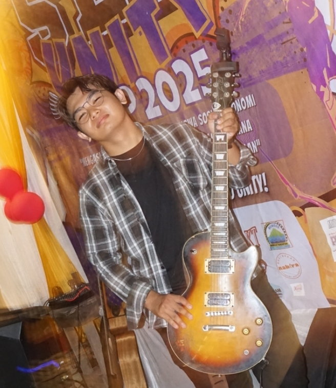

Halo, saya Muhammad Faris Saputra.
Ini adalah website tugas matakuliah Sistem Informasi Manajemen Perikanan (SIMP) saya yang dibuat menggunakan HTML dan GitHub.
Lihat Profil Saya Tugas 2 (Formulir) Lihat Tugas 3 Lihat Tugas 4 Tugas Akhir